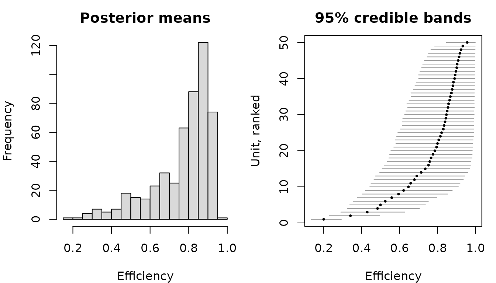

A stochastic frontier model splits the disturbance of a regression into a symmetric noise term and a one-sided term that measures the distance to a frontier. For a production frontier,
so that traces the maximum output attainable with the inputs and is the efficiency with which unit reaches it. For a cost frontier the sign of is reversed and the frontier becomes a lower envelope.
The package supports two distributions for : exponential with rate , and half-normal with scale .
A model is assembled step by step rather than in a single call. The
constructor fixes the data, the frontier and the MCMC settings; the
add_* functions attach the remaining blocks and then the
posterior draws.
d <- sim_sf(n = 500, beta = c(1, 0.5, 0.3), sigma_v = 0.2, par_u = 4)
model <- create_sfmodel_exp(y ~ x1 + x2, data = d,
iterations = 4000, burnin = 1000)
model
#> Bayesian stochastic frontier model
#>
#> Frontier: production
#> Inefficiency: exponential
#> Observations: 500
#> Coefficients: 3
#> Inefficiency terms: 500 (one per observation)
#> Iterations: 4000 after 1000 burn-in, thinning 1
#>
#> Specification:
#> priors not set
#> initial values not set
#> seed not set
#> posterior not simulatedPrinting the object reports what is still missing. That seam is worth having: these samplers take a while on a real panel, and it is cheaper to check the specification here than to discover a mistake after the run.
model <- add_priors(model)
model <- add_initial_values(model)
model <- add_seed(model, 5555)
model
#> Bayesian stochastic frontier model
#>
#> Frontier: production
#> Inefficiency: exponential
#> Observations: 500
#> Coefficients: 3
#> Inefficiency terms: 500 (one per observation)
#> Iterations: 4000 after 1000 burn-in, thinning 1
#>
#> Specification:
#> priors set
#> initial values set
#> seed set
#> posterior not simulated
#>
#> Prior median efficiency: 0.75add_initial_values() also draws a seed if the model does
not have one, so a model is reproducible whether or not
add_seed() is used. The sampler sets that seed and puts the
generator back afterwards, which means a set.seed() call
placed between these steps and the simulation does not change the
result.
The distribution of the inefficiency term is carried by the class of
the object, sfmodel_exp here and sfmodel_hn
for the half-normal alternative, so add_priors() and
add_posterior_coefficients() dispatch on it. The next
section shows why that matters more than it might appear.
The inefficiency parameter is hard to reason about directly, so its
prior is anchored on r_star, the efficiency score one
considers equally likely to be exceeded as not, a priori.
For the exponential model the mapping is exact. Placing a gamma prior with shape 1 and rate on implies the marginal prior density
whose median is exactly , so that the prior median of is . A quick check:
m <- add_priors(create_sfmodel_exp(y ~ x1 + x2, data = d),
lambda = list(r_star = 0.75))
lambda <- rgamma(1e5, shape = m$priors$shape_u, rate = m$priors$rate_u)
median(exp(-rexp(length(lambda), rate = lambda)))
#> [1] 0.751849No such closed form is available for the half-normal model, where the
anchor is matched only in expectation: the prior mean of
is set to the value that would place the median of
at
.
The two models therefore need different elicitations of the same
quantity, which is exactly what the separate add_priors()
methods provide — and why the argument is named after the parameter it
governs, lambda for one model and sigma_u for
the other.
model <- add_posterior_coefficients(model)
summary(model)
#> Bayesian stochastic frontier model
#>
#> Call:
#> create_sfmodel_exp(formula = y ~ x1 + x2, data = d, iterations = 4000,
#> burnin = 1000)
#>
#> Frontier: production
#> Inefficiency: exponential
#> Observations: 500
#> Units: 500
#> Draws: 4000 after 1000 burn-in, thinning 1
#>
#> Posterior summary, 95% credible bands:
#> mean sd 2.5% median 97.5% ESS
#> (Intercept) 1.0434 0.0196 1.0046 1.0441 1.0824 265
#> x1 0.5082 0.0127 0.4823 0.5082 0.5325 1311
#> x2 0.2893 0.0133 0.2634 0.2892 0.3154 1124
#> sigma_v 0.1888 0.0139 0.1631 0.1882 0.2167 279
#> lambda 3.3635 0.2517 2.9161 3.3497 3.8912 338
#>
#> Posterior mean efficiency, per observation:
#> mean min median max
#> 0.7698 0.1999 0.8248 0.9563The simulated data used , and . Note that the slopes are pinned down far more sharply than the intercept, which has to be separated from the mean of the one-sided term using only the asymmetry of the residuals. That is a feature of the model rather than of the sampler, and it is worth keeping in mind whenever the level of the frontier is itself of interest.
The ESS column is the effective sample size of each
block: the number of independent draws the chain is worth, which is what
the width of a credible band should be read against. The draws are kept
as coda objects, one block per parameter, so anything that
reads mcmc objects works on them directly if more is
wanted:
coda::autocorr.diag(model$posterior$lambda$coeffs, lags = c(1, 5, 10))
#> lambda
#> Lag 1 0.6399448
#> Lag 5 0.4033362
#> Lag 10 0.2038971
plot(model, type = "trace")Before reading the scores, it is worth asking whether the sample says anything about the one-sided term. A production frontier skews the composed error to the left, and if the least squares residuals carry no such skew then there is no evidence of inefficiency in the data.
skewness_test(model)
#> Skewness of the least squares residuals
#>
#> Frontier: production (implies negative skewness)
#> Observations: 500
#>
#> skewness -0.9514
#> M3T statistic -4.8507
#> p-value 0
#> standard error from 299 resamples of the observations
#>
#> The residuals are skewed as the frontier implies, so the sample carries
#> information about the one-sided term and the efficiency scores are
#> estimated from it.Maximum likelihood answers this loudly, by collapsing onto least
squares. A posterior cannot: the prior holds the inefficiency term away
from zero, so the sampler returns plausible looking scores whether or
not the data support them. A verdict of weak or
wrong does not mean the model should be abandoned, but it
does mean the scores below are largely the prior, and should be reported
as such.
The test is a proxy, and a test, with an error rate of its own. The quantity it stands for can be measured directly, by moving the anchor and seeing how far the scores follow:
prior_sensitivity(model, r_star = c(0.6, 0.75, 0.9))
#> Sensitivity of the efficiency scores to the prior
#>
#> Frontier: production
#> Inefficiency: exponential
#> Seed: 5555 for every fit
#>
#> Mean efficiency by prior median efficiency:
#> r_star mean sd min max
#> 1 0.60 0.7703 0.1525 0.2012 0.9564
#> 2 0.75 0.7698 0.1531 0.1999 0.9563
#> 3 0.90 0.7692 0.1534 0.2004 0.9574
#>
#> Frontier coefficients:
#> (Intercept) x1 x2
#> 0.60 1.0423 0.5089 0.2875
#> 0.75 1.0434 0.5082 0.2893
#> 0.90 1.0444 0.5087 0.2881
#>
#> scores move by 0.0011 across the grid
#> coefficients by 0.0021 at most
#>
#> The scores barely move with the anchor, so they are estimated from the
#> data rather than carried over from the prior.The frontier coefficients hold still while the scores are free to move, which is the pattern to expect: what the data determine sharply is the frontier, and what they determine least is the distance to it.
eff <- efficiency(model)
head(eff)
#> unit mean sd 5% 50% 95%
#> 1 1 0.7116944 0.12265205 0.5171881 0.7058558 0.9274100
#> 2 2 0.9119789 0.07025439 0.7737776 0.9292155 0.9937740
#> 3 3 0.6124371 0.11898755 0.4381727 0.6003177 0.8297582
#> 4 4 0.8691899 0.09197750 0.6964914 0.8829123 0.9880946
#> 5 5 0.6136645 0.11782545 0.4407402 0.6001720 0.8249348
#> 6 6 0.3611094 0.07021075 0.2572907 0.3531609 0.4880977
plot(model, type = "efficiency")
The left panel is the summary usually reported. The right one is the reason to look further: with one observation per unit there is very little information about any individual , and the bands are wide enough to cover much of the range the histogram spreads over. That uncertainty is real, and it is what the maximum likelihood route cannot report, since the Jondrow et al. (1982) conditional mean is a point predictor of an unobserved quantity.
summary(eff[["95%"]] - eff[["5%"]])
#> Min. 1st Qu. Median Mean 3rd Qu. Max.
#> 0.1234 0.2646 0.3234 0.3155 0.3764 0.4185add_posterior_loglik() evaluates the pointwise
log-likelihood with the inefficiency term integrated out, and
selection_criteria() turns those draws into information
criteria.
fit <- function(model) {
model <- add_posterior_coefficients(add_priors(model))
add_posterior_loglik(model)
}
m_exp <- fit(create_sfmodel_exp(y ~ x1 + x2, data = d,
iterations = 4000, burnin = 1000))
m_hn <- fit(create_sfmodel_hn(y ~ x1 + x2, data = d,
iterations = 4000, burnin = 1000))
selection_criteria(m_exp)
#> Selection criteria for a Bayesian stochastic frontier model
#>
#> Frontier: production
#> Inefficiency: exponential
#>
#> mean median qlower qupper
#> LL -145.4363 -145.097 -149.6214 -143.2815
#> AIC 295.8537 NA NA NA
#> BIC 316.9268 NA NA NA
#> HQ 304.1228 NA NA NA
#> WAIC 296.2428 NA 220.7916 371.6939
selection_criteria(m_hn)
#> Selection criteria for a Bayesian stochastic frontier model
#>
#> Frontier: production
#> Inefficiency: halfnormal
#>
#> mean median qlower qupper
#> LL -149.5353 -149.1716 -153.6604 -147.4099
#> AIC 304.1215 NA NA NA
#> BIC 325.1946 NA NA NA
#> HQ 312.3906 NA NA NA
#> WAIC 304.8269 NA 229.3410 380.3128The data were generated with exponential inefficiency, and the criteria prefer that specification. They are not always so decisive: the two distributions are hard to tell apart when inefficiency is small relative to noise, which is the usual situation.
Supplying id gives each unit a single inefficiency term
held fixed over its observations, the time-invariant model of Pitt and
Lee (1981). Repeated observations sharpen the individual scores
considerably.
dp <- sim_sf(n = 100, beta = c(1, 0.5, 0.3), sigma_v = 0.2, par_u = 4,
n_time = 8)
estp <- create_sfmodel_exp(y ~ x1 + x2, data = dp, id = "id",
iterations = 4000, burnin = 1000)
estp <- add_posterior_coefficients(add_priors(estp))
effp <- efficiency(estp)
summary(effp[["95%"]] - effp[["5%"]])
#> Min. 1st Qu. Median Mean 3rd Qu. Max.
#> 0.07094 0.13550 0.17102 0.16009 0.18716 0.20524
cor(effp$mean, attr(dp, "efficiency"))
#> [1] 0.9512272The price is a strong assumption. Since is the only unit-specific term in the model, every persistent difference between units — technology, market, business model — is booked as inefficiency. Separating those two requires a model with both a unit effect and a persistent inefficiency component, which is on the roadmap rather than in the package today.
Note also that add_posterior_loglik() refuses a panel
model. The units share one inefficiency term, so integrating it out
couples the observations that belong to the same unit and the likelihood
no longer factorises over them. The information criteria are therefore
unavailable here, and a panel specification cannot be compared with a
cross-sectional one this way.
add_initial_values(method = "prior") draws the starting
values from the prior instead of anchoring them on a least squares fit,
which is the more useful choice when running several chains: the
starting points are then dispersed rather than identical.
base <- add_priors(create_sfmodel_exp(y ~ x1 + x2, data = d,
iterations = 2000, burnin = 1000))
chains <- lapply(1:3, function(i) {
m <- add_seed(add_initial_values(base, method = "prior"), i)
colMeans(add_posterior_coefficients(m, keep_u = FALSE)$posterior$beta$coeffs)
})
do.call(rbind, chains)
#> (Intercept) x1 x2
#> [1,] 1.041948 0.5086454 0.2880717
#> [2,] 1.039729 0.5084949 0.2873258
#> [3,] 1.046566 0.5080353 0.2881696Jondrow, J., Lovell, C. A. K., Materov, I. S., & Schmidt, P. (1982). On the estimation of technical inefficiency in the stochastic frontier production function model. Journal of Econometrics, 19(2–3), 233–238.
Koop, G. (2003). Bayesian Econometrics. Chichester: Wiley.
Pitt, M. M., & Lee, L.-F. (1981). The measurement and sources of technical inefficiency in the Indonesian weaving industry. Journal of Development Economics, 9(1), 43–64.
van den Broeck, J., Koop, G., Osiewalski, J., & Steel, M. F. J. (1994). Stochastic frontier models: A Bayesian perspective. Journal of Econometrics, 61(2), 273–303.